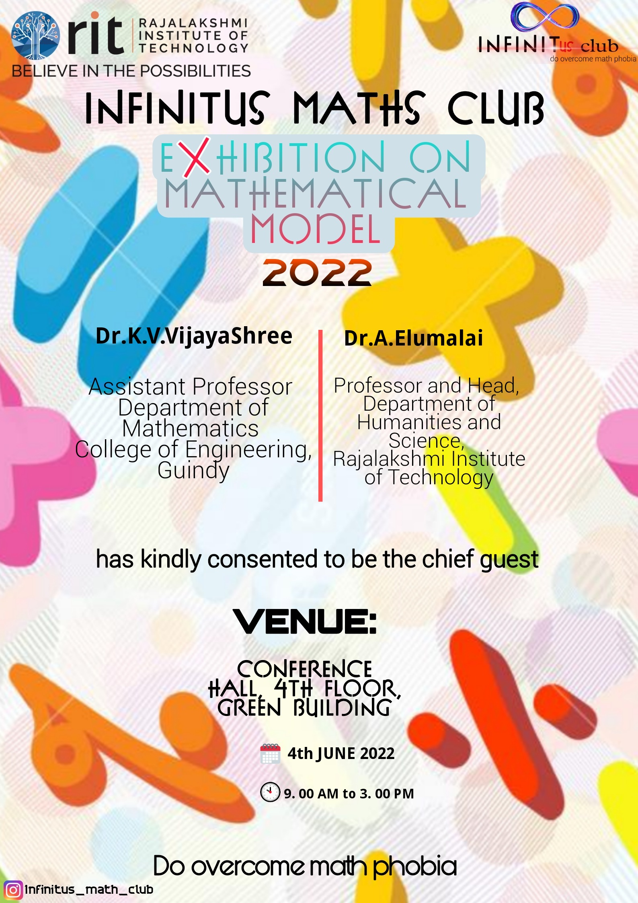
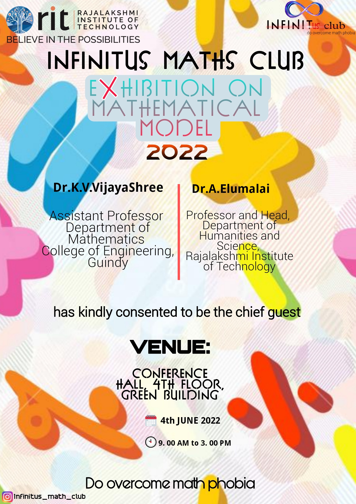
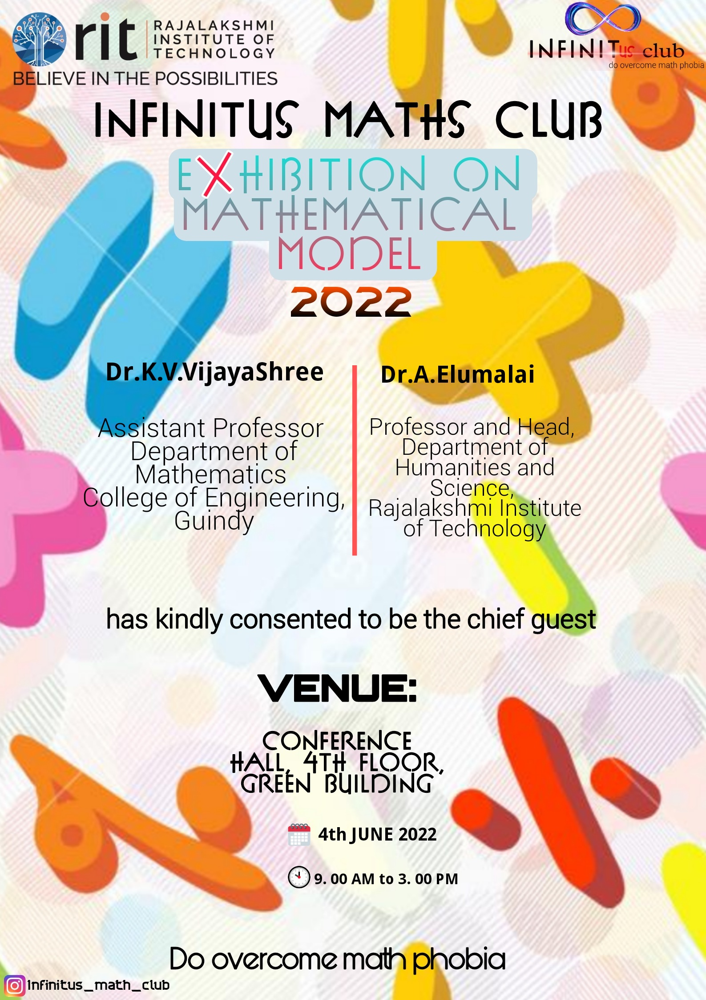

Gallery


 



A diligent and well-organized individual seeking a responsible position to apply practical experience and skills while making a meaningful impact on the company's success.
Serverless API, Bubble Apps, Power Apps, Power Automate - Chatbot, Image generator by prompt
Certificates, Posters, Invitations
2D and 3D Unity Game
MindFlow (UI and UX Design)
My Captain - UI & UX Design
My Captain - Python
Won 2nd prize in Topic of Network Security
Impact of AI, AR, and VR and Xenobots
Cyber Security
Image Processing
Mathiesta, XPONDERS-2022, BLlTZKRlEG-2K22
ICRTlCPT'2022
